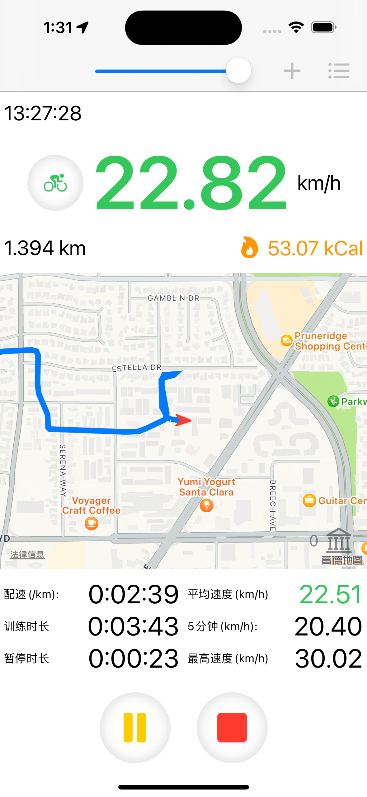

TrainingTracker是一款用来记录训练轨迹的App，它有iOS和macOS两个版本。
首页最上方有3个按钮，分别是骑行、健走和跑步。选择任意一种运动类型进入训练页（以下以骑行为例）。
上方工具栏右侧的两个按钮分别是“显示/关闭地图”和“地标编辑器“。
地图右下角的图标按钮可以切换地图上地标的显示。
单击下方的开始按钮开始训练。
地图会根据当前位置实时画出轨迹。
如果当前速度过低，会自动暂停训练，直到速度恢复，训练自动继续。
如果单击暂停按钮，训练暂停，但不会自动继续。

单击下方的停止按钮结束训练，确认后进入训练结束页。
训练结束页显示了途径的地标点（路径描述），训练数据，地图路径。
地图右下角有两个图标，分别切换地标显示和彩色速度路径显示。
向下拖动还有速度图表和高度表。
在速度图表上点击，可以在地图上以红色标记显示出对应的位置
用户还可以添加评级（默认3）和路径说明（默认以路径描述填充）
训练页右上角的图标按钮可以打开地标编辑器。
可以将当前位置设置为地标，并且指定一个半径。以后每次经过地标附近，TrainingTracker都会将此地标写入轨迹描述，用来标识每一条训练轨迹。
地图上的箭头可以微调坐标，也可以直接输入数字。
点击下方地标列表，可以在地图上显示地标信息，并允许编辑。
首页下方是以运动类型分类的标签页，标签页的上部是该运动类型的统计数据，包括总训练距离、总训练时长和总训练次数等，下部按日期分类按时间逆序排列的历史记录
点击历史记录，可以显示和训练结束内容相似的轨迹详情。
轨迹详情只可以修改评级和路径说明。
选择运动类型（默认选择所有运动类型）查看运动记录。
按日期展示训练记录。
按轨迹展示训练记录。
编辑地标，计算距离。
完。
技术支持：proteuszj